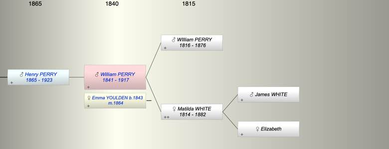

| [Index] |
| William PERRY (1841 - 1917) |
|  |
| b. 1841 at Kelly Devon |
| m. 1864 Emma YOULDEN (1843 - ) at Kelly, Devon |
| d. 1917 at Ontario Canada aged 76 |
| Near Relatives of William PERRY (1841 - 1917) | ||||||
| Relationship | Person | Born | Birth Place | Died | Death Place | Age |
| Grandfather | James WHITE | |||||
| Grandmother | Elizabeth | |||||
| Father in Law | William YOULDEN | |||||
| Mother in Law | Rebecca | |||||
| Father | WIlliam PERRY | 1816 | 27 Jan 1876 | Kelly Devon | 60 | |
| Mother | Matilda WHITE | 1814 | Scotland | 26 Jul 1882 | Kelly Devon | 68 |
| Self | William PERRY | 1841 | Kelly Devon | 1917 | Ontario Canada | 76 |
| Wife | Emma YOULDEN | 1843 | Kelly Devon | |||
| Son | Henry PERRY | 1865 | Thurleston | 1923 | Plymouth | 58 |
| Daughter in Law | Living or Recently Deceased | |||||
| Grandson | Cyril Robert PERRY | 16 Mar 1900 | Plymouth | 1934 | Plymouth | 34 |
| Grandson | Living or Recently Deceased | |||||
| Events in William PERRY (1841 - 1917)'s life | |||||
| Date | Age | Event | Place | Notes | Src |
| 1841 | William PERRY was born | Kelly Devon | |||
| 1864 | 23 | Married Emma YOULDEN (aged 21) | Kelly, Devon | Note 1 | |
| 1865 | 24 | Birth of son Henry PERRY | Thurleston | ex 1911 census | |
| 27 Jan 1876 | 35 | Death of father WIlliam PERRY (aged 60) | Kelly Devon | aged 59 ex Find a grave | |
| 26 Jul 1882 | 41 | Death of mother Matilda WHITE (aged 68) | Kelly Devon | Note 2 | |
| 1917 | 76 | William PERRY died | Ontario Canada | ||
| Personal Notes: |
| https://www.ancestry.co.uk/family-tree/person/tree/44844403/person/6271930796/facts?_phsrc=FCE5&_phstart=successSource |
| Created on a Mac™ using iFamily for Mac™ on 15 Sep 2023 |